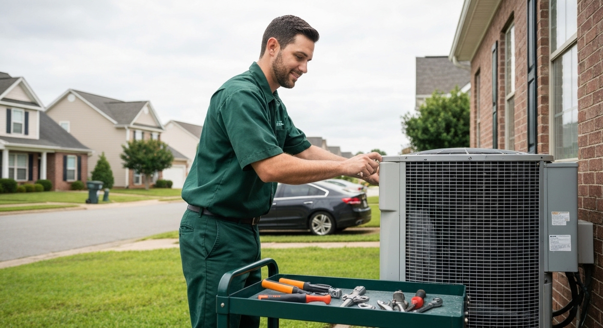

Serving Hartselle, Morgan County, and surrounding North Alabama · Honest diagnostics · No surprise charges
📞 (256) 215-9287
Your system stopped working and it's 95°F outside. The question isn't whether to call — it's finding someone who shows up, diagnoses what's actually wrong, and doesn't default to "you need a new system" when the real fix is a $250 part.
Hartselle has a lot of older housing stock with systems that can still be repaired cost-effectively — but only if the tech is willing to actually diagnose rather than push replacement. That's how we operate. Call (256) 215-9287 — Hartselle is in our regular service area.
Call (256) 215-9287 — we answer or call back within 30 minutes. Describe the issue and we'll give you an honest first read.
Same-day or next-day service for Hartselle area calls. Emergency calls within 2–4 hours when availability permits.
Written diagnostic on arrival — full system inspection, findings in writing before any repair decision.
Honest repair vs. replace guidance — for older Hartselle systems, we run through both options with real cost numbers. If repair makes sense, we'll tell you. If replacement makes more sense long-term, we'll tell you that too. No pressure either way.
Same-visit repair for most calls — common parts are on the van.
"I have a 15-year-old system. The last company I called said I needed a full replacement — $8,500. These guys came out and found a bad contactor and low refrigerant. $310 total. Still running two summers later." — Frank D. · Hartselle
"Called about my furnace not lighting. They diagnosed a cracked igniter, had the part on the van, done in 90 minutes. Showed me the old part. Invoice was exactly what they quoted." — Michelle R. · Morgan County
"Finally found an HVAC company that doesn't try to scare you into buying a new system. Honest assessment, honest price. Will call them every time." — Bill S. · Hartselle
Service call + diagnostic: $75–$150 (credited toward repair if you proceed)
Capacitor replacement: $150–$300
Contactor or fan motor: $150–$500
Refrigerant recharge: $200–$400
Full AC unit replacement (installed): $3,500–$7,500
Full HVAC system (installed): $7,000–$14,000
Annual tune-up: $89–$149
Real North Alabama market ranges. Exact quote depends on system and condition. Diagnosis in writing. Repairs don't start until you approve.
Yes — Hartselle is in our regular service area. Response time for standard calls is typically same-day or next-day. Emergency calls within 2–4 hours when availability permits.
Yes. Many Hartselle homes have systems from the 1990s–2000s that can still be repaired cost-effectively. We diagnose honestly and give you repair vs. replace options with real numbers, rather than defaulting to a new system quote.
Yes. We install all major brands including Goodman, Rheem, Carrier, and Trane. We'll recommend what fits your budget and your home's needs — not the highest-margin option on our end.
We service HVAC systems across Hartselle, Decatur, Huntsville, and surrounding North Alabama communities. If your system is 10+ years old with no recent service history, schedule a tune-up before cooling season rather than waiting for a failure on a hot August afternoon.
(256) 215-9287 — answered live.
Same-day and next-day service for Hartselle and Morgan County.
📞 Call (256) 215-9287